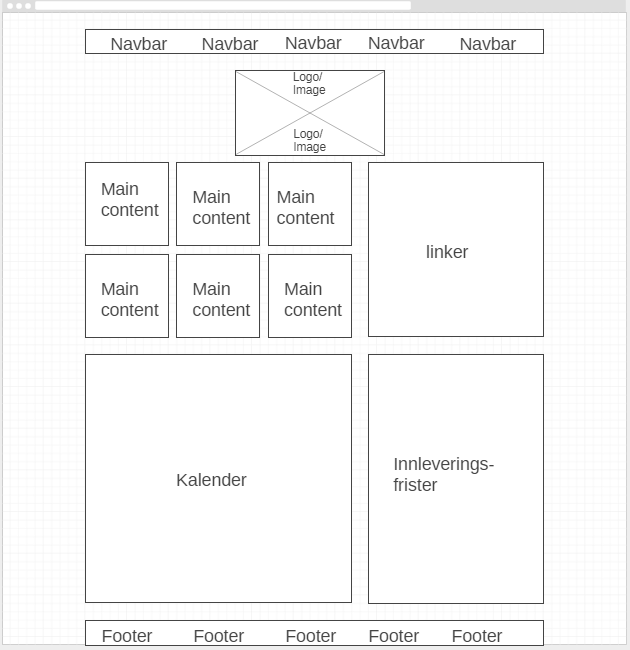

Hva er idèen bak denne netsiden?
Først så begynte jeg å tegne med hjelp av et wirframe verktøy, for å se for meg hvordan nettsiden skulle se ut. Bilde som er vedlagt er det sluttlige resultatet. Jeg ville ha en enkel og lett å leselig side der man kunne finen fram fort. Nav baren har Position: sticky; fordi jeg likte at man har tilgang til navigasjonen heletiden.